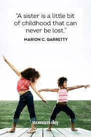

Two Sisters
She’s your best friend and yet no one can make your blood boil like she can. That’s sisters for you. The bond between sisters is like no other. A sister is someone you can be yourself with, whom you’re not afraid to fight with—and likely often do. At the end of the day though, a sister’s love is unconditional and life-long.
Best Sister Quotes and My Love towards my Sister.
“A sister is a dearest friend, a closest enemy, and an angel at the time of need.”― Debasish Mridha
“As you’re growing up and you’re close, you can’t trust anyone the way you trust your sister, but also they have the power to wound you in ways no one else really does.”—Ally Condie
“We’ll always fight, but we'll always make up as well. That's what sisters do: we argue, we point out each other’s frailties, mistakes, and bad judgment, we flash the insecurities we've had since childhood, and then we come back together. Until the next time.”—Lisa See
“A sister is like yourself in a different movie, a movie that stars you in a different life.”—Deborah Tannen
“I do not see as well without her. I do not hear as well without her. I do not feel as well without her. I would be better off without a hand or a leg than without my sister.”—Erin Morgenstern
Nobody fights you like your own sister; nobody else knows the most vulnerable parts of you and will aim for them without mercy.”—Jojo Moyes
“Sisters function as safety nets in a chaotic world simply by being there for each other.”—Carol Saline
Quotes
